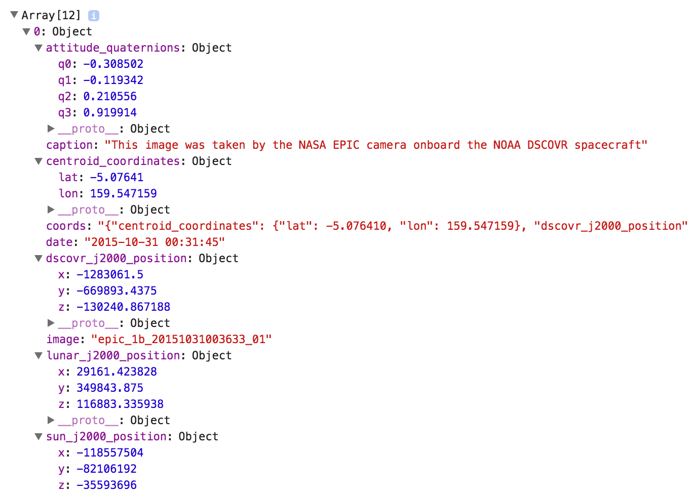

EPIC API
EPIC API Background
The first specific API we will be exploring in this How-To Guide is the NASA EPIC API. Good job parsing through the introductory modules to get to the core subject matter of this guide! The EPIC API allows developer's access to the information retrieved from the Deep Space Climate Observatory (DSCOVR) satellite’s EPIC instrumentation. EPIC stands for Earth Polychromatic Imaging Camera. The specific documentation for this API can be found here:
Of the three API's this guide covers, the EPIC API has the best documentation for query requests but has vague documentation on how to access the images from the servers once a specific image is found. This guide will fill in this current documentation gap and give a specific application as an example of this API's implementation.
EPIC URL Queries
The above link goes into a good amount of detail regarding the URL query specifics for this API. The idea is this API allows developer's access to either natural color images or enhanced color images from the EPIC instruments. This can be requested either on a specific date or a list of most recent images can be returned to the user. This API guide will focus on requesting the natural images taken on a specific date but the techniques shown in this example can be applied on all other forms of this query.
Example Query Code
As shown in the "JSON Objects" module, the following code can be used to request information from the EPIC API.
var exampleURL = "https://api.nasa.gov/EPIC/api/natural/date/2015-10-31";
var apiKey = 'Your Key Goes Here';
var request = new XMLHttpRequest();
request.open('GET', exampleURL + '?api_key=' + apiKey, true);
request.addEventListener('load',function(){
if(request.status >= 200 && request.status < 400){
var response = JSON.parse(request.responseText);
console.log(response);
}
else {
console.log("Error in network request: " + request.statusText);
}});
request.send(null);
The key concept here is the query URL with the following code: "https://api.nasa.gov/EPIC/api/natural/date/2015-10-31" This query requests from the NASA servers that you receive for the date of 2015-10-31 all natural color images taken from the EPIC instrumentation. If you wanted the enhanced color images instead, all you would have to do is change the URL query to the following: "https://api.nasa.gov/EPIC/api/enhanced/date/2015-10-31".
Returned EPIC Object
Once again, we will take a look at the returned object from the previous module but this time with all the metadata expanded.

This metadata is explained in great detail in the EPIC API documentation here:
All metedata information is quite straightforward with this API except for accessing the images from the NASA servers. As you can see from the above example. The image data returned is simply a string with the image name "epic_1b_20151031003633_01".
Retrieving EPIC Images
To access the EPIC images from the NASA servers, the image name has to be placed at the end of another URL query that follows the following formula:
https://epic.gsfc.nasa.gov/archive/natural/' + year + '/' + month + '/' + day + '/jpg/' + 'IMAGE_NAME+ '.jpg';
Previous Example:
https://epic.gsfc.nasa.gov/archive/natural/2015/10/31/jpg/epic_1b_20151031003633_01.jpg
That URL can be used to directly view the full resolution version of the requested EPIC image. As you can imagine, this then can be implemented into a return function to allow you to request a specific image on a given day and then display that image to the user of your site. In the next section this functionality will be showed to you through an example JavaScript program!
EPIC API in Action!
The following code is the exact code used in the implementation of the API example at the bottom of the page. After looking at the example below, please continue reading for a line by line explanation of each section of the code including referenced HTML.
var apiKey = 'Your Key Here';
document.addEventListener('DOMContentLoaded', submitButtonsReady);
function submitButtonsReady(){
document.getElementById('dateInput').addEventListener('click', function(event){
var request = new XMLHttpRequest();
var date = document.getElementById('dateValue').value;
var dateArray = date.split("-");
var year = dateArray[0];
var month = dateArray[1];
var day = dateArray[2];
request.open('GET', 'https://api.nasa.gov/EPIC/api/natural/date/' + date + '?api_key=' + apiKey, true);
request.addEventListener('load',function(){
if(request.status >= 200 && request.status < 400){
var response = JSON.parse(request.responseText);
if(typeof(response[0].image) === 'string')
{
document.getElementById('imageStatus').textContent = 'Found';
document.getElementById('imageID').src = 'https://epic.gsfc.nasa.gov/archive/natural/' + year + '/' + month + '/' + day + '/jpg/' + response[0].image + '.jpg';
document.getElementById('imageCaption').textContent = response[0].caption;
}
}
else
{
console.log("Error in network request: " + request.statusText);
}});
document.getElementById('imageStatus').textContent = 'Please try a different date or check your syntax!';
request.send(null);
event.preventDefault();
})
}
FORM Event Listeners
As previously mentioned, this guide is meant to explain the NASA API and not go into lengthy detail regarding form usage or DOM events. The first couple of lines in this code will be used in all API examples going forward. This guide will summarize what these functions are doing as they interact with the API features of this tutorial.
var apiKey = 'Your Key Here';
document.addEventListener('DOMContentLoaded', submitButtonsReady);
function submitButtonsReady(){
document.getElementById('dateInput').addEventListener('click', function(event){
The first line of this code declares a variable for the user's API key. The line under adds a new event listener to the HTML document that enables the function 'submitButtonReady()' once all established DOM elements are loaded and ready on the screen. The purpose of this is to ensure that all DOM documents are available for modification before the function 'submitButtonsReady()' tries to modify them. The line under that is the function declaration for 'submitButtonsReady()'. The purpose of this function is to launch our API's AJAX request when the user clicks the submit button located on the page. This submit button can be seen below in the API example.
EPIC AJAX Request
The next part of the code should look somewhat familiar compared to the API and JSON module examples. We are creating a new object called 'request' that is going to open our AJAX stream through the 'XMLHttpRequest()' function.
function submitButtonsReady(){
document.getElementById('dateInput').addEventListener('click', function(event){
var request = new XMLHttpRequest();
var date = document.getElementById('dateValue').value;
var dateArray = date.split("-");
var year = dateArray[0];
var month = dateArray[1];
var day = dateArray[2];
request.open('GET', 'https://api.nasa.gov/EPIC/api/natural/date/' + date + '?api_key=' + apiKey, true);
The next part of the code is where understanding the query URL and image result URL comes to play. For you to successfully make the API query request and point to the NASA directory when linking a pulled image, it is necessary to take the input from the user and make individual string variables for the year, month, and day. The line of code, 'document.getElementById('dateValue').value' pulls the string input from the HTML form and assigns the string to the variable 'date'. This string variable is taken in the format "YYYY-MM-DD". The next line of code 'date.split("-")' takes the 'date' variable and splits it into an array of values that are separated based off the dash in the provided string. From this, we can parse the 'dateArray' array and assign a string variable equal to the year, month, and day respectively. Now the separate date variables aren't needed for the AJAX request but will be necessary for constructing a URL to link to the posted image. The final line of code 'request.open('GET', 'https://api.nasa.gov/EPIC/api/natural/date/' + date + '?api_key=' + apiKey, true)', should look familiar at this point. We are simply sending the EPIC API AJAX request to retrieve the JSON object containing the natural images taken on the date specified by the user of the HTML form.
Parsing EPIC JSON
The next part of the code should look somewhat familiar to previous examples. The AJAX request will move through if a proper request status is received.
request.addEventListener('load',function(){
if(request.status >= 200 && request.status < 400){
var response = JSON.parse(request.responseText);
if(typeof(response[0].image) === 'string')
{
document.getElementById('imageStatus').textContent = 'Found';
document.getElementById('imageID').src = 'https://epic.gsfc.nasa.gov/archive/natural/' + year + '/' + month + '/' + day + '/jpg/' + response[0].image + '.jpg';
document.getElementById('imageCaption').textContent = response[0].caption;
}
The new lines of code appear at the conditional statement 'if(typeof(response[0].image) === 'string')'. This statement checks to see if the requested image method from the parsed JSON object is of the type string. The reason this is necessary is the API will accept dates that don't contain EPIC data and still respond with a status in the acceptable range. This conditional statement ensures the user knows if a proper date has been passed. The code above is only executed if a correct date has been entered. The next line of code, 'document.getElementById('imageStatus').textContent = 'Found'' simply changes the text content of the span "Image Retrieval Status: ". This shows the user that an actual image has been found. The next line of code shows why the date parsing before the AJAX request was necessary. The code, 'document.getElementById('imageID').src = 'https://epic.gsfc.nasa.gov/archive/natural/' + year + '/' + month + '/' + day + '/jpg/' + response[0].image + '.jpg';' will append the image source code that correctly corresponds with the requested date in the query URL. The image URL depends on the year, month, and day all concatenated as one long string along with the pulled image file name contained in the response[0].image method. In this example, there is only one picture pulled from the API request. It is possible to query 12 photos that are taken throughout the requested day. For the purposes of this example we are only showing the first image acquired on the requested date. The last line of code, 'document.getElementById('imageCaption').textContent = response[0].caption;', simply appends the associated image caption to the HTML span "Image Caption: ".
EPIC API Recap
At this point, the remainder of this code is almost identical to previous examples. There is one additional line, 'document.getElementById('imageStatus').textContent = 'Please try a different date or check your syntax!';', that will notify the user if the API request was accepted by the NASA server but there was no image data sent back to the user. This guide has shown you how to make various queries using the EPIC API, parse the returned objects from the EPIC API, shown how to link found images to the NASA servers, and avoid the pitfall of requesting invalid dates during implementation. The working version of the EPIC API example code is located below.
EPIC API Example
This is an example of the EPIC API in action!
TIP: The first acquired images start on 2015-09-01
Image Result
Image Retrieval Status:Image Caption: